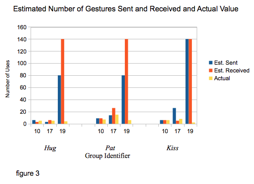

Introduction
You can check out our User Testing presentation slide deck.
Introduction: Describe your motivation and goals. Note your driving questions and hypotheses.
BearHug is a video chatting platform for couples. The goal of BearHug is to help couples feel more connected by representing physical gestures with animated avatars. In testing BearHug with users, we need to investigate the effectiveness of the avatars, to discover whether this addition does in fact help couples feel closer. In particular, we are looking at two questions. First, quantitatively: do couples choose to use the animation feature; in particular, do they use it after the initial novelty and discovery period? And second, qualitatively, do they feel like their chat session was improved by the animations; do they feel closer to their partner? Additionally, we will be observing if the couples communicate with any other gestures/interactions that could be potentially included in BearHug.
Our hypothesis for the first question is yes, couples will choose to use the animation feature. There will be an initial spike in usage, as they discover and play with the feature, which will drop down as the chat goes on, however we will still see use, particularly at the end of a chat when they say goodbye. Our hypothesis for the second question is also yes, couples will feel that the animation improved their chat experience. We also hypothesize that there will be some norm of reciprocity, so that when one person sends an action, the partner will respond immediately.
Methods
Methods: Describe your study design and tasks. Whom did you recruit and how did you recruit them?
We are recruiting five couples to test BearHug. We will approach them Monday night over email. The couples have been selected from our extended networks, with some long-distance that heavily rely on videochatting to communicate with each other, others physically closer who yet still use videochatting as a communication tool. The couples also vary in age, relationship length, race and profession.
They will each be sent a link to a unique instance of BearHug, hosted on Heroku. We will ask them to use BearHug between Monday evening and Wednesday evening, for as long as they wish. During chats, use of the animation buttons will be logged with timestamps. After each time they use the chat, they will be asked to fill out a survey with open-ended questions such as "Please tell us about your videochat (topics covered, emotions felt, etc.)," as well as quantitative questions with rating scales.
Two of our couples will be asked to do a brief video chat while we observe from one end. While this may change how they interact with each other and the platform, a strong motivation for remote testing, we may also be able to glean additional data from the observation that we cannot by remote testing.
We have chosen not to give any explicit tasks beyond "use the video chat application", in order not to bias our users towards over-using the animations. Our driving questions are about how often the animations are used and their effectiveness, so we would prefer the use to arise naturally.The questions we have for our users include:
General Experience:
Please tell us about your videochat (topics covered, emotions felt, etc.)
How different was this videochatting session from your usual videochatting experience?
Sending Gestures:
Did you use the hug bear gesture?
If you answered yes, why did you decide to use the hug bear gesture in that particular moment?
Did you use the kiss bear gesture?
If you answered yes, why did you decide to use the kiss bear gesture in that particular moment?
Did you user the pat bear gesture?
If you answered yes, why did you decide to use the pat bear gesture in that particular moment?
Of the gestures, which did you send to your partner the most often? Least often?
Receiving Gestures:
What emotion did you feel when you received a bear gesture from your partner? (eg. happy, loved, amused, indifferent)
Did you receive a hug bear from your partner?
If you answered yes, how loved/close did you feel when you received a bear hug from your partner? 1 not so much - 5 extremely
Did you receive a kiss bear from your partner?
If you answered yes, how loved/close did you feel when you received a bear kiss from your partner? 1 not so much - 5 extremely
Did you receive a pat bear from your partner?
If you answered yes, how loved/close did you feel when you received a bear pat from your partner? 1 not so much - 5 extremely
Which gesture did you receive from your partner most often?
Addtl. General Questions:
What other interactions would you like the bears to do, if any?
Would you use BEARHUG again when video chatting?
How likely are you going to recommend BearHug to your friends?
Results
Results: Describe your data and present the results of data analysis (observations, statistics, charts, etc).
We collected data through clicks recorded on Firebase, and through surveys filled out by participants after testing. From the Firebase data, we saw that Pat was the most commonly used gesture (35 total uses), with Hug and Kiss tied (23 total uses).
The breakdown per user pair can be seen more clearly in figure 2; there is variance between groups on most commonly used gesture, though Pat still is the most common in five out of six cases. We can also see from this chart whether or not pairs used the gestures more than just during a discovery period. With 3 gesture types, and 2 people in a chat, full discovery of the interface takes 6 gestures. Two groups were near that threshold; one with 7 gestures, and the other with 4. The other 4 groups all exceeded 10 gestures over the course of the chat.
Since we collected estimated numbers of gestures sent and received during the survey, we can do a comparison between estimated and actual levels of interaction. The charts represent the combined estimates per category of both partners. In most cases (even excluding the obvious outlier), people estimate more interaction than they actually did. (Note that we had to remove three groups because either one or both partners did not complete the survey). 
In reviewing the data collected in the survey, we classified words used to describe “sending gestures” and “receiving gestures” as positive or negative. Figures 5 and 6 show the breakdown of positive vs negative words; in both cases, positive words made up over 75% of the result.
Discussion
Discussion: Synthesize what you learned, document any shortcomings or caveats or your testing.
We had two questions in mind for this study. We will address them in order.
1. Do couples use the gestures?
Hypothesis is confirmed. Yes, pairs use the gestures, even after an initial discovery period. 4 out of six groups continued to use the gestures after the initial 6 needed for discovery. Out of the two that used close to the discovery period, one group had video issues arising from WebRTC compatibility and stopped using the application. Therefore we conclude that when given the chance to use the gesture features, people do choose to use them as a part of their interactions during the chat. As a follow up to the numerical data, some people decided to tell us in the survey why they used the gestures. A selection of reasons include:
“[I} tended to use the gestures in lieu of physical ones I would've done if my chat partner and I were in the same location.”
“When [name] got distracted by work and I was trying to get his attention...When we were kissing goodnight and ending the call.”
“mostly out of curiosity.”
“First just to try them out, then for fun a few times, then to annoy Heidi by using the ones she didn't like:)”
2. Do couples feel closer to their partner when using gestures?
Again, hypothesis is confirmed. Yes, couples feel closer to their partner when using gestures. For both sending and receiving gestures, the vast majority of emotions associated with the action was positive. A selection of quotes from the responses represent some of the descriptions given:
“I felt sentimental and loved when I received a kiss.”
“It actually made me feel better when I received the gestures to reaffirm what had been stated or as his way to indicate affection virtually.”
Our study did have some weaknesses, that we need to consider when evaluating and using the results.
1. Novelty effect
We only had a short study period for couples to use BearHug. This means that most couples only used the videochat once, though sessions ranged from 10 to 40 minutes. One time use means we could collect no data on whether couples lose interest in the gestures over time, and thus whether our metrics of success are biased by a novelty effect.
2. WebRTC issues
WebRTC is a new technology, and the specs are not fully implemented across browsers. At least one group could not get video working on both sides; one group reported poor audio quality. This is unfortunately an issue that we cannot fix, as implementing web standards is far outside the scope of this project. However it does limit who can use the application. On the other side of the issue, WebRTC video, when it works, is very high quality, and participants cited this as well as a reason to keep using the application.
3. Self-reported data
Since one aspect of our data collection was self-reported surveys, it may include reporting biases. We tried to control numeric data by recording actual results as well; however we cannot do so with emotional effects. Not all participants filled out the survey, so there may be some bias in our data based on who chose to report their results, and bias within the data if they felt the need to be overly positive about a new technology or our project.
Implications
Implications: Describe how you plan to apply the study results in the next iteration of your application
First of all, our study seems to confirm our development direction. There appears to be a use case for BearHug, and we thus will continue to refine this idea.
The study has raised several directions that we need to move in our further development. First of all, we need to address the negative emotions raised in reactions to gestures. While 75% positive is a good start, having 25% negative reactions to the gestures is a problem. Some of these feelings included being “trapped” when the controls freeze during animations, or feeling “mildly insulted” by the pat gesture.
We also need to address technical issues. Some of them are inherent to WebRTC, and unfixable. However, some can be improved, such as adding more complex controls to the bears beyond buttons.
With these two main issues in mind, we lay out three concrete steps to take, and one final user response that informs our direction.
1. Make more collaborative
By allowing both bears to move at once, we let users interact more naturally and collaboratively with each other. This should address the issue of “feeling trapped,” as no bear will freeze during an animation. This is already in our development plan, as a step we planned to take.
2. Allow people to refuse/evade gestures
This was mentioned by several users as something they wanted. Again, this may address some of the negative feelings associated with the gestures, by giving the user power to refuse an animation that makes them uncomfortable or they don’t want to accept given the conversation at the time. This can be added easily as another gesture set, by adding another control and a new animation.
3. Control via mouse
Again, this is in our development plan as a next step. Seeing users bring this up without any mention or prompting from our team encourages us that this is a needed development. Gesture-based control is a possibility, but will only be tackled after other developments are complete.
And finally, from user group 17:
“We wound up moving the bears around by clicking and dragging with the mouse and using the ghost of the image to simulate interactions. We then recorded the interactions on Snapchat (pics and videos) and sent them to each other. The interactions included putting the bear next to the other bear and moving it around, and also moving the bear into the video feed.” -- User17
This is highly encouraging to us, as moving the bear with the mouse, developing your own gestures, and using the bears within the video feed, are parts of our final vision for the application. That a pair of our users came to this on their own with no prompting, and that they found this compelling enough to share via Snapchat, implies that this is a good direction for development.
← BACK